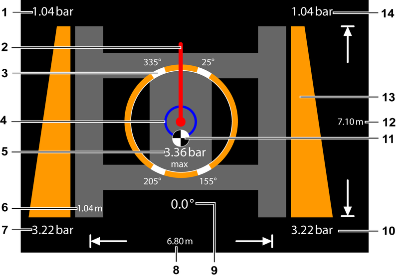

Bildschirmseite Bodendruck*
Taste Bildschirmseite Bodendruck
Auf Bildschirmseite Bodendruck umschalten.

Fig. 2219: Bildschirmausschnitt Bodendruckverteilung
Fig. 2219: Bildschirmausschnitt Bodendruckverteilung
Bodendruck am Leitrad vorne links | |
Aktuelle Ausrichtung des Hauptauslegers | |
Drehwinkel des Oberwagens mit maximal auftretendem Bodendruck (4x) | |
Hilfskreis zur Drehkranzspiel-Ermittlung | |
Maximal auftretender Druck | |
Auflagefläche der Bodenplatten | |
Bodendruck am Fahrantrieb hinten links | |
Abstand zwischen linkem und rechtem Raupenträger | |
Aktueller Drehwinkel des Oberwagens | |
Bodendruck am Fahrantrieb hinten rechts | |
Aktuelle Lage des Schwerpunkts in Richtung des Hauptauslegers | |
Auflagefläche der Raupenträger | |
Bodendruckverteilung (2x) | |
Bodendruck am Leitrad vorne rechts |
Die abgebildeten Werte sind beispielhafte Werte.
Anzeige Gleichmäßige Verteilung des Bodendrucks
Bodendruck ist gleichmäßig auf Auflagefläche der Raupenträger verteilt.
Anzeige Ungleichmäßige Verteilung des Bodendrucks
Schwerpunkt ist nach hinten verlagert.
Anzeige Ungleichmäßige Verteilung des Bodendrucks
Schwerpunkt ist nach vorn verlagert.

Taste Fester Untergrund (leuchtet grün)
Fester Untergrund ist gewählt.
Weichen Untergrund wählen.

Taste Weicher Untergrund (leuchtet grün)
Weicher Untergrund ist gewählt.
Festen Untergrund wählen.